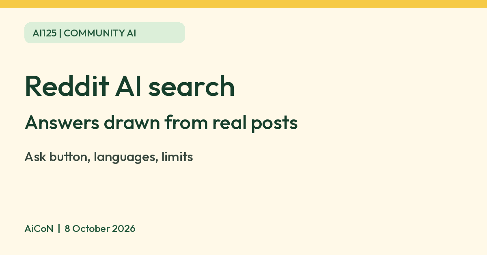

Reddit AI search: ask a question and get answers drawn from Reddit posts
Reddit says its AI search gives answers, perspectives and recommendations summarised from real posts and comments. Reddit lists India among the countries where it works in English. It is a summary of what people said, so open the linked posts and judge them yourself.

What it is
Reddit's Help Center describes Reddit's AI search as a way to get answers, perspectives and recommendations from all of Reddit. Reddit says it uses generative AI to find, synthesise and deliver easy-to-understand answers from real posts and comments. It was first announced in December 2024 as "Reddit Answers" and has since been merged into Reddit search.
How to use it
- Open the Reddit search bar and type your question.
- Tap or click Ask. Reddit says this takes you to AI-generated summaries of what people on Reddit are saying.
- Pressing enter instead takes you to the normal search results.
| Languages | Reddit's page lists English, Spanish, Brazilian Portuguese, Italian, French and German. |
|---|---|
| Where | Reddit says it works worldwide in English, and lists India among the countries where you can use it even if your device language is not English. |
| Platforms | Reddit says it is available across all platforms. |
Limits to know
- It summarises what Redditors wrote. Reddit posts can be wrong, old, joking or one person's opinion, so open the linked posts and read them.
- For health, money, legal or safety questions, do not treat a summary of strangers' comments as advice. Ask a qualified person.
- Reddit's page does not mention a price, and we quote none.
- Reddit's page lists no Indian languages other than English. We did not test the feature.
Frequently asked questions
Is it the same as Reddit Answers?
Reddit says Answers has been merged into Reddit search.
Does it work in Hindi?
Reddit's list does not include Hindi.
Can I still use normal search?
Yes. Reddit says you can still use the search bar and press enter for normal results.
Sources: Reddit Help: Reddit's AI search, Reddit: Introducing Reddit Answers. Checked 8 October 2026.